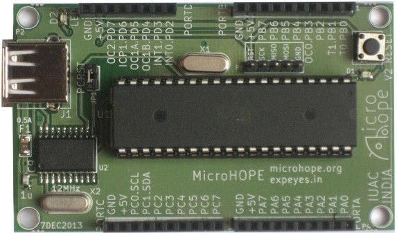

 MicroHOPE is a micro-controller development system based on Atmel ATmega32. Developed by IUAC, New Delhi, and released as open hardware. Unlike many other systems, the focus is on understanding the fundamentals of micro-controller architecture and programming rather than learning the features of the development kit. The knowledge gained on Atmega32 using MicroHOPE can be easily applied in understanding another micro-controller. There is no complex IDE for MicroHOPE. A simple text editor with a couple of extra buttons to invoke avrgcc and avrdude ( to compile and upload the code) is all what we have. It is tested on both GNU/Linux and MS-Windows. Debian packages are available.
We start with simple C programs, treating the uC as a device with programmable Input/Output pins, and then introduce the peripherals like ADC, communication ports etc. The uC architecture is explored using simple assembly language programs and LEDs connected to the I/O ports.
User's manual, in PDF format, may be downloaded from here (or here)
USBASP programmer